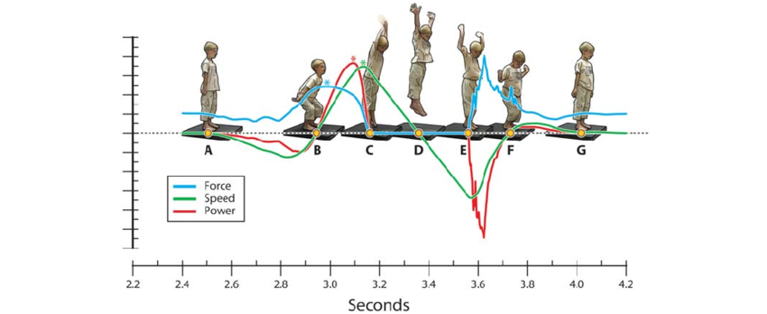

In this project we employ functional data analysis methods such as Smoothing, Functional Principal component Analysis , Functional Clustering methods and Functional T.test to uncover subgroups of players based on their distinctive jump patterns

In this project, Discriminant models are built to identify and assess the key factors that influence an individual's susceptibility to heart disease.
This analysis delves into the trends and dynamics of the English Premier League (EPL) over the past decade, offering valuable insights into the evolving landscape of one of the world's most prestigious football leagues.

In this project multiple regression and logistic regression analysis technigues are employed to predict annual earnings and Credit default respectively.

Analysis of smart device fitness data to derive insights that will guide Bellabeat's marketing strategy.